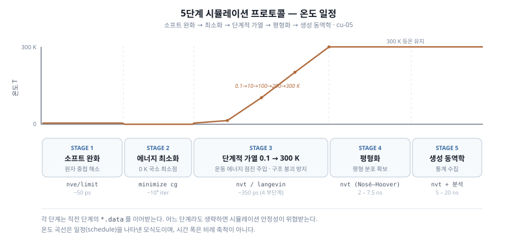

시뮬레이션은 다음 다섯 단계를 거친다. 단계마다 필요한 이유가 있고, 하나라도 건너뛰면 계가 불안정해지기 쉽다.
| 단계 | 적분기 (Integrator) | 온도 제어 | 압력 제어 | 목적 |
|---|---|---|---|---|
| 1. 소프트 완화 | NVE/limit | Langevin 0.1 K | 없음 | 원자 중첩 해소 |
| 2. 에너지 최소화 | (정적) | 없음 | 없음 | 국소 최소점 도달 |
| 3. 단계적 가열 | NVT (Langevin) | 0.1 → 300 K | 없음 (정용량) | 운동 에너지 점진 주입 |
| 4. 평형화 | NVT | 300 K | 없음 | 열역학 평형 분포 확보 |
| 5. Production | NVT | 300 K | 없음 | 통계 수집 |

5단계의 모듈식 입력 구성과 실행 흐름은 예제 E4 — Cu 벤젠-에탄올 흡착 에 한데 모아 두었다 (데이터 파일이 없어 그대로는 실행되지 않는다는 점도 거기 적었다).
아래 입력은 모두 inputs/ 의 파일에서 발췌했다. 다섯 파일을 공개된
opls.data 와 LAMMPS 22 Jul 2025 로, PPPM 과 MSM 각각
run 길이만 줄여 끝까지 돌려 오류 없이 지나가는 것을 확인했다.
모든 stage 파일은 같은 순서로 시작한다. pair_coeff 는 박스가 있어야 하고 pair_style 이 먼저 정의돼 있어야 하므로
순서를 바꾸면 "Pair_coeff command before simulation box is defined" 같은 오류가 난다.
include common.in # units, atom_style, boundary, neighbor
read_data ../opls.data # stage 2 부터는 read_restart stageN.restart
include kspace_pppm.in # pair_style + kspace_style
include ff_opls_aa.in # pair_modify, *_style, *_coeff
UROPS run 의 실제 입력(master_wall_pppm.in)은 이 틀과 몇 군데 다르다.
1단계에 pair_style soft 와 fix adapt 를 썼고, 2단계는 steepest descent, 가열은 0.005 → 0.1 → 0.25 fs 로 timestep 을 바꿔 가며 했고,
평형화 1 ns 와 production 2 ns 를 0.5 fs 로 돌렸다.
5.1 Stage 1: 소프트 완화 (Soft potential relaxation)
왜 이 단계가 필요한가
초기 데이터 파일에는 벤젠/에탄올 분자가 무작위로 놓여 있어서 일부 원자 쌍이 LJ σ 보다 가까이 붙어 있을 수 있다. 12-6 LJ는 $r \to 0$에서 발산하므로, 보통의 적분기로 그대로 적분하면 곧바로 수치 폭발(numerical explosion)이 일어난다.
소프트 포텐셜은 LJ를 잠시 다음과 같은 부드러운 함수로 바꿔 놓는다.
$$ U_{\text{soft}}(r) = A\left[1 + \cos\left(\frac{\pi r}{r_c}\right)\right] \quad (r < r_c) $$
$A$ 를 0에서 조금씩 키우면 겹친 원자가 부드럽게 밀려나 떨어진다.
fix nve/limit로 한 시간 스텝의 최대 변위를 제한하는 방법도 있다.
LAMMPS 입력
여기서는 fix nve/limit를 쓴다. 변위는 제한하되 실제 힘장을 그대로 쓰므로
다음 단계로 매끄럽게 넘어간다.
# 01_soft.in (공통 머리 다음)
group cu type 12
group organic subtract all cu
fix wall_top organic wall/lj93 zhi EDGE 0.1 3.0 10.0 units box
fix freeze_cu cu setforce 0.0 0.0 0.0
timestep 0.5
fix relax organic nve/limit 0.05 # 한 스텝당 최대 변위 0.05 Å
fix tstat organic langevin 0.1 0.1 100.0 87287
thermo 100
thermo_style custom step temp pe ke etotal press vol
run 100000 # 50 ps
write_restart stage1.restart
fix nve/limit 0.05: 한 시간 스텝에 원자가 움직일 수 있는 거리를 0.05 Å 로 묶는다.
LJ σ(약 2.5–3.5 Å)의 1.5–2 % 정도다.
opls.data 로 돌리면 첫 스텝 퍼텐셜 에너지가 $9.2 \times 10^{14}$ kcal/mol 이고 100 스텝 뒤 $4.8 \times 10^{4}$ kcal/mol 로 떨어진다.
LAMMPS fix nve/limit 문서에서 자세히 다룬다.
Cu 는 어떤 적분 fix 에도 들어 있지 않으므로 이미 움직이지 않는다. setforce 0 은 출력되는 힘을 0 으로 만들어
최소화 단계에서 Cu 가 움직이지 않게 하는 역할이다.
5.2 Stage 2: 에너지 최소화 (Energy minimization)
왜 이 단계가 필요한가
Stage 1에서 변위를 제한해 큰 힘을 없앴다면, Stage 2에서는 실제 힘장 위에서 conjugate gradient (CG) 나 steepest descent 로 국소 최소점까지 내려간다. 결과는 운동 에너지가 없는 0 K 정적 평형 구조다.
0 K 구조 자체를 통계 평균에 쓰지는 않는다. 다만 이어지는 가열 단계에서 운동 에너지를 안전하게 넣을 수 있는 "안정된 출발점"이 된다.
LAMMPS 입력
# 02_min.in (read_restart stage1.restart 로 시작)
fix wall_top organic wall/lj93 zhi EDGE 0.1 3.0 10.0 units box
fix_modify wall_top energy yes # 최소화가 벽 에너지까지 보도록
fix freeze_cu cu setforce 0.0 0.0 0.0
min_style cg
minimize 1.0e-6 1.0e-6 10000 100000
write_restart stage2.restart
minimize 1.0e-6 1.0e-6 10000 100000의 의미 (LAMMPS minimize 문서):
etol = 1.0e-6: 에너지 변화 허용치 (상대값)ftol = 1.0e-6: 힘의 norm 허용치 (kcal/mol/Å)maxiter = 10000: 최대 반복 횟수maxeval = 100000: 최대 힘/에너지 평가 횟수
벽 fix 의 에너지는 기본적으로 퍼텐셜 에너지에 들어가지 않는다. fix_modify ... energy yes 가 없으면
최소화기가 보는 에너지와 힘이 서로 맞지 않는다.
min_style cg (conjugate gradient) 가 대개 가장 효율적이지만,
초기 구조가 아주 나쁘면 min_style sd (steepest descent) 로 몇 백 스텝 먼저 돌려도 된다.
5.3 Stage 3: 단계적 가열 (Staged heating)
왜 단계적으로 가열하나
0 K 정적 구조를 한 번에 300 K 로 올리면 다음 문제가 생긴다.
- 벤젠 π-π 적층 (stacking) 구조 붕괴: 초기 잠재 에너지 곡면의 깊은 우물에서 갑작스러운 운동 에너지가 국소 미세 구조를 무너뜨린다.
- 에탄올 수소 결합 네트워크 형성 지연: 수소 결합은 협동적으로 형성되는데, 고온에서는 이러한 네트워크가 잘 만들어지지 않는다.
- 표면 흡착층의 비물리적 탈리: 0 K 흡착 분자가 갑자기 큰 운동 에너지를 받으면 표면에서 떨어진다.
그래서 다음처럼 나눠서 가열한다.
| 부단계 | 온도 범위 | 지속 시간 | 주요 변화 |
|---|---|---|---|
| 3.1 | 0.1 → 10 K | 100 ps | 벤젠 π-π stacking 안정화 |
| 3.2 | 10 → 100 K | 200 ps | 분자 진동/회전 모드 활성화 |
| 3.3 | 100 → 200 K | 200 ps | 에탄올 수소 결합 네트워크 재배열 |
| 3.4 | 200 → 300 K | 200 ps | 액체상 평형 분자 운동 도달 |
오른쪽 열은 각 온도 구간에서 기대하는 변화이고, 이 계에서 직접 확인한 것은 아니다.
LAMMPS 입력 (Langevin 동역학)
가열 단계에는 Langevin 열욕(thermostat)이 잘 맞는다. 평형화를 앞당기는 random force 항이 명시적으로 들어 있기 때문이다 (LAMMPS fix langevin 문서).
# 03_heat.in (read_restart stage2.restart 로 시작, 그룹·벽·고정은 앞과 같음)
velocity organic create 0.1 87287 dist gaussian mom yes rot yes sum no
timestep 0.5
fix integrator organic nve
fix tstat organic langevin 0.1 10.0 50.0 12345
run 200000 # 0.1 → 10 K, 100 ps
unfix tstat
fix tstat organic langevin 10.0 100.0 100.0 12346
run 400000 # 10 → 100 K, 200 ps
unfix tstat
fix tstat organic langevin 100.0 200.0 100.0 12347
run 400000 # 100 → 200 K, 200 ps
unfix tstat
fix tstat organic langevin 200.0 300.0 100.0 12348
run 400000 # 200 → 300 K, 200 ps
write_restart stage3.restart
fix langevin T_start T_stop damp seed의 의미:
T_start, T_stop: 시작/종료 온도 (K). run 동안 선형으로 바뀐다.damp: 감쇠 시간 (real단위계에서는 fs). 작을수록 열욕과 강하게 묶인다. 50–100 fs 가 흔히 쓰는 값이다.seed: 난수 시드 (스테이지마다 다른 값을 쓴다)
fix ID 로 thermo 를 쓰지 않는다. fix nvt 는 <ID>_temp 라는 compute 를 만드는데, ID 가 thermo 면
LAMMPS 가 원래 가진 thermo_temp 와 이름이 겹쳐 "Reuse of compute ID 'thermo_temp'" 오류가 난다.
시간 스텝 (timestep) 고르기
- OPLS-AA: C-H 신축이 약 3000 cm⁻¹, O-H 신축이 약 3600 cm⁻¹ 이라 주기가 9–11 fs 다. 주기의 1/10–1/20 로 잡으면 시간 스텝은 0.5-1.0 fs 다. X-H 결합을 SHAKE 로 묶으면 2.0 fs 까지 늘릴 수 있다 (6장의 예시).
- TraPPE-UA: 무거운 united-atom 사이트의 진동만 다루므로 1.0-2.0 fs 도 된다.
여기서는 두 힘장을 맞추려고 가열 단계에서 0.5 fs 를 썼다.
5.4 Stage 4: 평형화 (Equilibration)
왜 이 단계가 필요한가
가열이 끝난 시점에 온도는 목표에 도달했어도, 분자 분포는 아직 평형(Boltzmann) 분포를 정확히 따르지 않을 수 있다. 그래서 평형화는 자기 상관 시간(autocorrelation time, $\tau_A$)의 10배 이상 돌려서 관심 물리량 $\langle A \rangle$ 을 믿고 잴 수 있게 만든다.
이 단계부터는 Langevin 대신 Nose-Hoover (fix nvt) 를 쓴다. deterministic dynamics를 유지하면서도 canonical 앙상블을 정확히 샘플링하기 때문이다.
LAMMPS 입력
# 04_eq.in (read_restart stage3.restart 로 시작)
timestep 0.5
fix tstat organic nvt temp 300.0 300.0 100.0
thermo 500
thermo_style custom step temp pe ke etotal press density
thermo_modify flush yes
run 2000000 # 4a) 1 ns
run 13000000 # 4b) 6.5 ns (필요하면 더 길게)
write_restart stage4.restart
thermo 의 temp 는 기본적으로 모든 원자의 자유도로 나눈다. Cu 371개는 움직이지 않으므로
찍히는 온도가 유기층의 실제 온도보다 낮다(이 계에서는 약 0.85배).
유기층 온도를 보려면 compute t_org organic temp 를 만들어 thermo_modify temp t_org 로 바꾼다.
fix nvt 는 자기 그룹(organic)의 온도로 조절하므로 열욕 자체는 맞게 동작한다.
fix nvt temp T_start T_stop damp의 의미 (LAMMPS fix nvt 문서):
T_start, T_stop: 평형화 중에는 동일하게 설정 (목표 온도)damp: 시간 단위.real단위에서는 보통 100 fs.
평형화 진행 모니터링
평형화가 충분한지는 다음으로 확인한다.
- 총 에너지의 안정화: log 파일에서 etotal 의 평균이 변동 폭 이내에서 일정한지.
- 표면 흡착층의 정착: 표면 1차 흡착층 (Cu 표면 5 Å 이내) 의 평균 점유율이 일정한지.
- 동경 분포 함수의 수렴: 마지막 50% 와 그 이전 50% 의 g(r) 이 동일한지.
inputs/04_eq.in 의 7.5 ns 는 넉넉히 잡은 값이고, 측정으로 정한 값은 아니다.
UROPS run 은 평형화를 1 ns 만 했는데, production 2 ns 동안 첫 층 벤젠 몰분율이 앞 1 ns 0.83 에서 뒤 1 ns 0.57 로 움직였고
벌크 조성 프로파일도 평평해지지 않았다(PPPM vs MSM 글).
에너지가 아니라 조성 프로파일이 시간에 따라 변하지 않을 때까지 돌리는 것이 기준이다.
5.5 Stage 5: Production
왜 이 단계가 필요한가
통계 평균에는 이 단계의 데이터만 쓴다. 평형화가 충분히 끝난 뒤, 자기 상관 시간보다 넉넉히 길게 돌린다.
LAMMPS 입력
# 05_prod.in (read_restart stage4.restart 로 시작)
group benzene type 1 2
group ethanol type 3:11 # opls.data: 에탄올은 type 3-11
timestep 0.5
fix tstat organic nvt temp 300.0 300.0 100.0
dump traj all custom 1000 dump.lammpstrj id mol type x y z vx vy vz
dump_modify traj sort id
# z 밀도 프로파일 (0.5 Å 빈)
compute zchunks all chunk/atom bin/1d z lower 0.5 units box
fix dens_b benzene ave/chunk 100 50 5000 zchunks density/mass file profile_benzene.dat
fix dens_e ethanol ave/chunk 100 50 5000 zchunks density/mass file profile_ethanol.dat
# RDF: Cu-C(벤젠), Cu-O(에탄올)
compute myrdf all rdf 200 12 1 12 5
fix rdf_save all ave/time 100 50 5000 c_myrdf[*] file rdf.dat mode vector
# 응력: 빈별 합을 저장하고, 후처리에서 -(합)/(빈 부피) 로 압력 성분을 얻는다
compute stress_per all stress/atom NULL pair bond angle dihedral improper kspace fix
compute stress_sum all reduce/chunk zchunks sum c_stress_per[1] c_stress_per[2] c_stress_per[3]
fix stress_save all ave/time 100 50 5000 c_stress_sum[*] file stress_profile.dat mode vector
# Cu-벤젠, Cu-에탄올 상호작용 에너지
compute e_cb cu group/group benzene
compute e_ce cu group/group ethanol
thermo 500
thermo_style custom step temp pe ke etotal press density c_e_cb c_e_ce
run 20000000 # 10 ns
write_restart stage5.restart
write_data final.data
fix ave/chunk 는 원자별 값을 빈 안에서 원자 수로 나눈 평균을 낸다. 응력처럼 빈 안의 합이 필요한 양은
compute reduce/chunk ... sum 으로 합을 구해 fix ave/time ... mode vector 로 저장한다.
fix ave/chunk 의 인자에는 bin/1d ... 같은 빈 정의가 아니라 compute chunk/atom 의 ID 가 들어간다.
Production 단계의 시간 결정 기준
| 분석 대상 | production 시간 기준 |
|---|---|
| 표면 흡착 비율 (SEI) | 10 ns 이상 (UROPS run 은 2 ns 에서 블록 표준오차 ±0.03–0.05) |
| 흡착 에너지 평균 | 3-5 ns |
| 계면 장력 (Irving-Kirkwood) | 5 ns 이상 |
| 수소 결합 수명 분포 | 5 ns 이상 |
OPLS-AA는 수소 결합 동역학이 느려서 production을 더 길게 잡아야 할 수 있다.
5.6 통합 입력 파일 구조
inputs/ 디렉토리는 다음과 같이 모듈로 나뉘어 있다.
inputs/
├── common.in # 단위, atom_style 등 공통 설정
├── ff_opls_aa.in # OPLS-AA 파라미터 (pair_coeff 등)
├── ff_trappe_ua.in # TraPPE-UA 파라미터
├── kspace_pppm.in # PPPM 정전기 설정
├── kspace_msm.in # MSM 정전기 설정
├── 01_soft.in # Stage 1
├── 02_min.in # Stage 2
├── 03_heat.in # Stage 3
├── 04_eq.in # Stage 4
└── 05_prod.in # Stage 5
각 stage 파일은 include 로 힘장과 kspace 설정을 불러온다.
프레임워크를 바꿀 때는 include 라인 두 줄만 수정하면 된다 (LAMMPS include 문서).
# OPLS-AA + PPPM 사용 시 (kspace 파일이 pair_style 을 정하므로 먼저 온다)
include kspace_pppm.in
include ff_opls_aa.in
# TraPPE-UA + MSM 사용 시
include kspace_msm.in
include ff_trappe_ua.in
TraPPE-UA 로 바꿀 때는 read_data ../trappe.data 와 그룹의 타입 번호(Cu = 6, 벤젠 = 1, 에탄올 = 2-5)도 함께 바꾼다.
trappe.data 는 공개돼 있지 않다.
이렇게 나눠 두면 기존 단계 구조는 그대로 둔 채 프레임워크만 바꿔 가며 비교할 수 있다.
참고문헌
-
LAMMPS 공식 문서,
pair_soft: https://docs.lammps.org/pair_soft.html -
LAMMPS 공식 문서,
fix nve/limit: https://docs.lammps.org/fix_nve_limit.html -
LAMMPS 공식 문서,
minimize: https://docs.lammps.org/minimize.html -
LAMMPS 공식 문서,
fix langevin: https://docs.lammps.org/fix_langevin.html -
LAMMPS 공식 문서,
fix nvt(fix_nh): https://docs.lammps.org/fix_nh.html -
LAMMPS 공식 문서,
include: https://docs.lammps.org/include.html -
M. P. Allen, D. J. Tildesley, "Computer Simulation of Liquids", 2nd ed., Oxford University Press (2017). ISBN: 9780198803195.
-
D. Frenkel, B. Smit, "Understanding Molecular Simulation: From Algorithms to Applications", 2nd ed., Academic Press (2002). ISBN: 9780122673511.